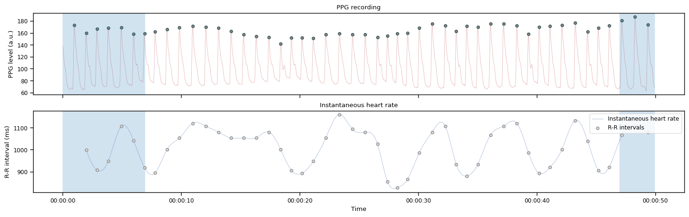
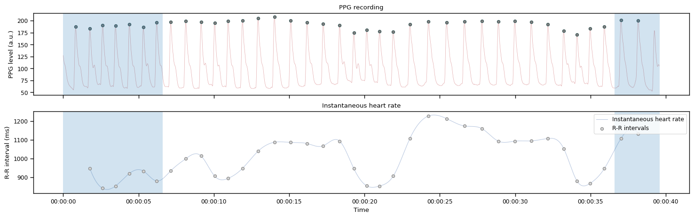
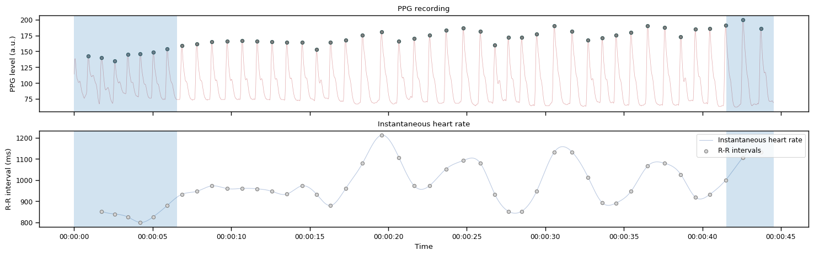
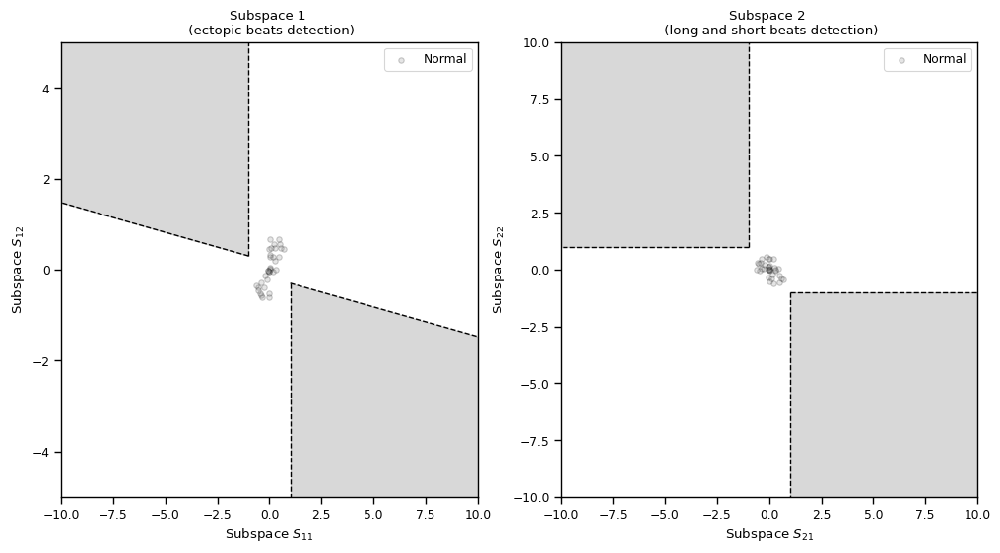
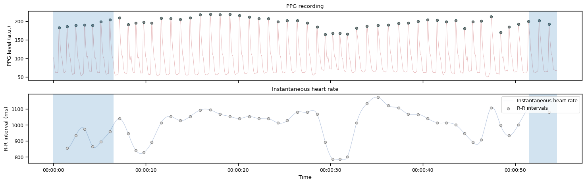
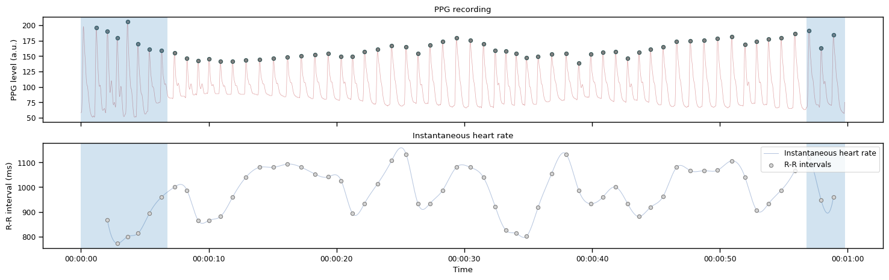
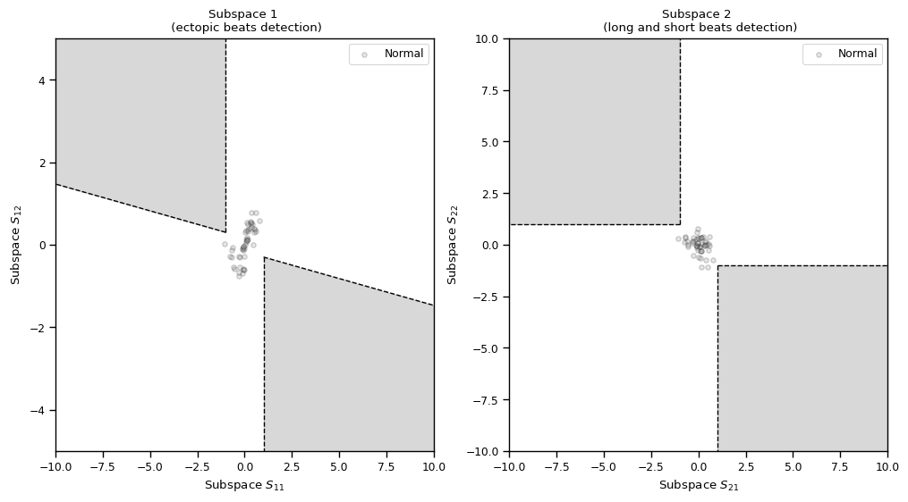
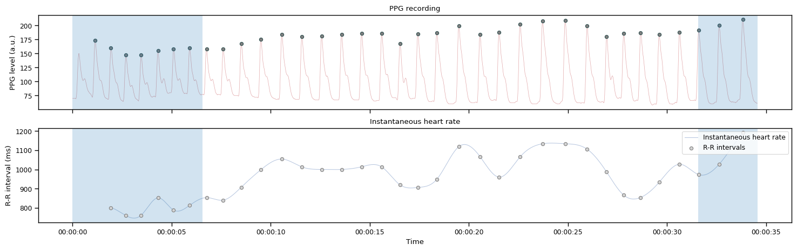

Heartbeat Counting task - Summary results#
Author: Nicolas Legrand nicolas.legrand@cas.au.dk
from pathlib import Path
import matplotlib.pyplot as plt
from matplotlib.dates import date2num
import numpy as np
import pandas as pd
import seaborn as sns
from systole.detection import ppg_peaks
from systole.plots import plot_raw, plot_subspaces
sns.set_context('paper')
%matplotlib inline
Import data
# Define the result and report folders - This should be adapted to you own settings
resultPath = Path(Path.cwd(), "data", "HBC")
reportPath = Path(Path.cwd(), "reports")
# ensure that the paths are pathlib instance in case they are passed through cardioception.reports.report
resultPath = Path(resultPath)
reportPath = Path(reportPath)
# Search files ending with "final.txt" - This is the main data frame that is saved at the end of the task
results_df = [file for file in Path(resultPath).glob('*final.txt')]
# Load dataframe
df = pd.read_csv(results_df[0])
df
| nTrial | Reported | Condition | Duration | Confidence | ConfidenceRT | |
|---|---|---|---|---|---|---|
| 0 | 0 | 36 | Count | 40 | 4 | 5.146 |
| 1 | 1 | 27 | Count | 30 | 5 | 9.909 |
| 2 | 2 | 29 | Count | 35 | 4 | 4.279 |
| 3 | 3 | 39 | Count | 45 | 5 | 3.278 |
| 4 | 4 | 47 | Count | 50 | 5 | 4.007 |
| 5 | 5 | 23 | Count | 25 | 5 | 2.635 |
# Load raw PPG signal - PPG is saved as .npy files, one for each trial
ppg = {}
for i in range(6):
ppg[str(i)] = np.load(
[file for file in resultPath.glob(f'*_{i}.npy')][0]
)
Heartbeats and artefacts detection#
Note
This section reports the raw PPG signal together with the peaks detected. The instantaneous heart rate frequency (R-R intervals) is derived and represented below each PPG time series. Artefacts in the RR time series are detected using the method described in [Lipponen and Tarvainen, 2019]. The shaded areas represent the pre-recording and post-recording period. Heartbeats detected inside these intervals are automatically removed.
Loop across trials#
counts = []
for nTrial in range(6):
print(f'Analyzing trial number {nTrial+1}')
signal, peaks = ppg_peaks(ppg[str(nTrial)][0], clean_extra=True, sfreq=75)
axs = plot_raw(
signal=signal, sfreq=1000, figsize=(18, 5), clean_extra=True,
show_heart_rate=True
);
# Show the windows of interest
# We need to convert sample vector into Matplotlib internal representation
# so we can index it easily
x_vec = date2num(
pd.to_datetime(
np.arange(0, len(signal)), unit="ms", origin="unix"
)
)
l = len(signal)/1000
for i in range(2):
# Pre-trial time
axs[i].axvspan(
x_vec[0], x_vec[- (3+df.Duration.iloc[nTrial]) * 1000]
, alpha=.2
)
# Post trial time
axs[i].axvspan(
x_vec[- 3 * 1000],
x_vec[- 1],
alpha=.2
)
plt.show()
# Detected heartbeat in the time window of interest
peaks = peaks[int(l - (3+df.Duration.iloc[nTrial]))*1000:int((l-3)*1000)]
rr = np.diff(np.where(peaks)[0])
_, axs = plt.subplots(ncols=2, figsize=(12, 6))
plot_subspaces(rr=rr, ax=axs);
plt.show()
trial_counts = np.sum(peaks)
print(f'Reported: {df.Reported.loc[nTrial]} beats ; Detected : {trial_counts} beats')
counts.append(trial_counts)
Analyzing trial number 1

Reported: 36 beats ; Detected : 40 beats
Analyzing trial number 2

Reported: 27 beats ; Detected : 30 beats
Analyzing trial number 3


Reported: 29 beats ; Detected : 36 beats
Analyzing trial number 4

Reported: 39 beats ; Detected : 46 beats
Analyzing trial number 5


Reported: 47 beats ; Detected : 51 beats
Analyzing trial number 6

Reported: 23 beats ; Detected : 25 beats
Save reults#
# Add heartbeat counts and compute accuracy score
df['Counts'] = counts
df['Score'] = 1 - ((df.Counts - df.Reported).abs() / ((df.Counts + df.Reported)/2))
df
| nTrial | Reported | Condition | Duration | Confidence | ConfidenceRT | Counts | Score | |
|---|---|---|---|---|---|---|---|---|
| 0 | 0 | 36 | Count | 40 | 4 | 5.146 | 40 | 0.894737 |
| 1 | 1 | 27 | Count | 30 | 5 | 9.909 | 30 | 0.894737 |
| 2 | 2 | 29 | Count | 35 | 4 | 4.279 | 36 | 0.784615 |
| 3 | 3 | 39 | Count | 45 | 5 | 3.278 | 46 | 0.835294 |
| 4 | 4 | 47 | Count | 50 | 5 | 4.007 | 51 | 0.918367 |
| 5 | 5 | 23 | Count | 25 | 5 | 2.635 | 25 | 0.916667 |
# Uncomment this to save the final result
#df.to_csv(Path(resultPath, 'processed.txt'))